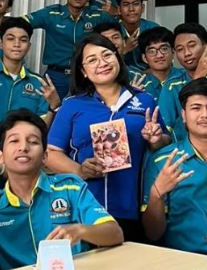
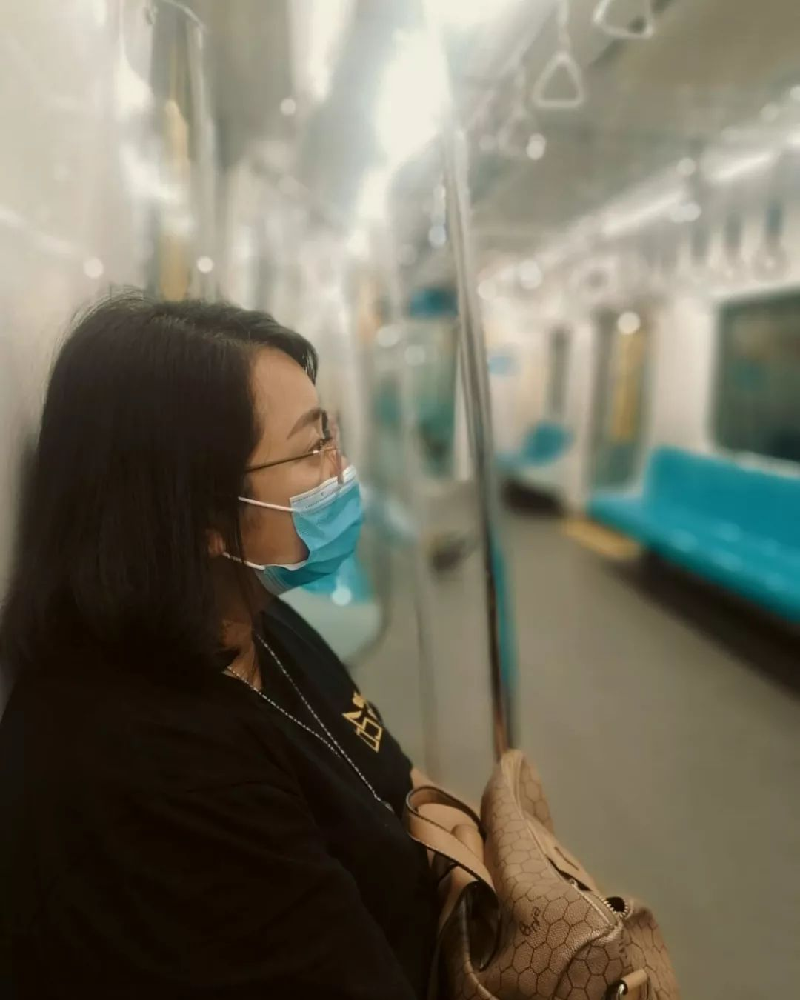
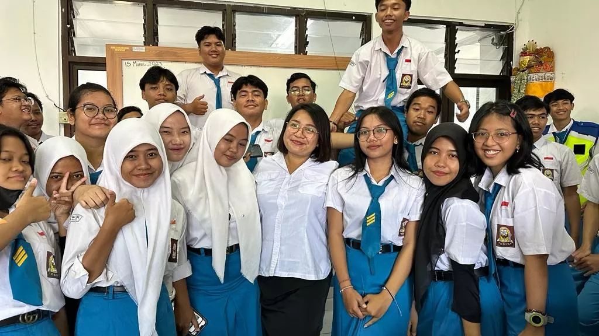
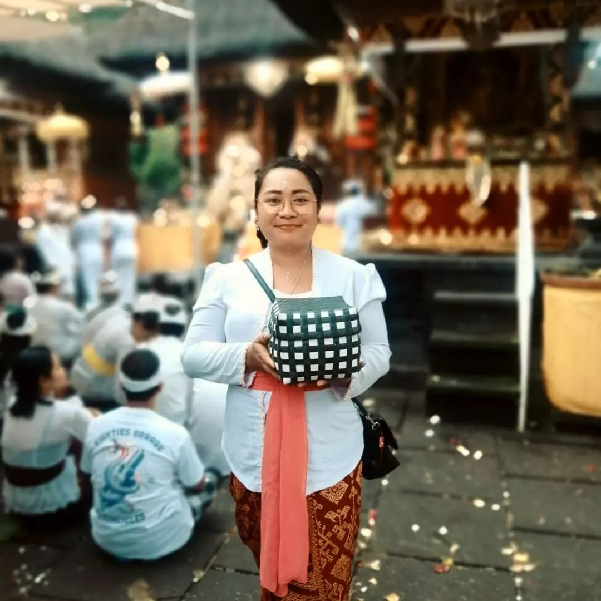

| SIAPA | |
|---|---|
|  | Ni putu Dilia Dewi S.Pd.,M.Hum, atau yang biasanya dipanggil Ms. Dilia, lahir pada 17 Maret 1987. Ia adalah seorang guru Bahasa inggris yang yang menjalani kehidupan kerja yang rendah hati dan jujur. Ia menjalani kehidupan yang memiliki banyak titik rendah, dan juga banyak titik tinggi. Beliau memiliki banyak pekerjaan, salah satunya sebagai guru bahasa Inggris di SMK Ti Bali Global Denpasar, dan dia adalah Guru Bahasa Inggris yang sangat baik. Banyak hal yang mendukung fakta ini, seperti waktu dia terpilih sebagai Guru Favorit 5 kali, 3 kali berturut-turut. Itu hanya beberapa hal yang telah dia capai dalam hidupnya sejauh ini, dan masih banyak lagi. |
| BACKSTORY | |
|---|---|
| MASA SMA | |
Dia saat menjadi seorang siswi SMA yang harus merasakan pahitnya menjadi korban bullying. Karena badan kecil, hitam, dan dekil, ia sering dilecehkan oleh teman-temannya. Sepatu sering dilempar, saat piket tong sampah ditendang, rambutnya ditarik. Kehidupan rumahnya yang broken home membuatnya sempat berpikir bahwa kesekolah saja menjadi berat. Namun, saat ingin meminta izin kepada orang tuanya, dia merasa takut dan sampai ingin bunuh diri dengan melakukan self harm. Meskipun masih terdapat tanda self harm hingga hari ini, ia akhirnya menyadari bahwa bunuh diri itu tidaklah baik. |
|
Pada saat kelas 2 SMA, ia bertemu dengan seorang teman baru yang disebut sebagai superhero-nya, karena telah menyelamatkan dirinya dari bullying. Temannya tersebut mengajarkan cara berdandan dan membela diri jika dibully. Berkat bantuan temannya itu, ia mulai berani untuk bolos dan hanya hadir di kelas 2-3 kali dalam seminggu. Namun, saat memasuki kelas 3 SMA, ia bertemu dengan teman-teman baru yang membentuk sebuah sirkel dan mendorongnya untuk berprestasi. Dengan bantuan mereka, ia berhasil meraih juara umum di sekolah dan juga juara kelas. |
|
| Keluarga & Pendidikan | |
Meskipun berasal dari keluarga yang sangat miskin, ia berhasil mendapatkan banyak beasiswa dari pemerintah. Ayahnya adalah seorang kuli pemotong daging, sementara ibunya adalah seorang kuli menanggul beras. Banyak orang yang meremehkan dirinya dan berkata bahwa ia takkan bisa kuliah, mengikuti jejak orang tuanya menjadi seorang kuli. Namun, ia tidak membiarkan perkataan tersebut menghentikan cita-citanya. Dengan kerja keras dan motivasi yang tinggi, ia berhasil membuktikan bahwa apapun pekerjaan orang tuanya, ia bisa meraih cita-citanya, bahkan menjadi seorang dosen. |
|
Tidak ada hal yang mudah dalam meraih impian. Ia belajar bahwa kerja keras tak bisa diungkapkan dengan kata-kata. Namun, dengan tekad dan kerja kerasnya, ia berhasil mengubah hidupnya dan membuktikan bahwa tak ada yang mustahil jika seseorang berusaha dan percaya pada dirinya sendiri. |
|
| |
|
| SEKARANG | |
|---|---|
Dia memiliki sejumlah pencapaian yang menunjukkan keberhasilannya dalam karirnya. Salah satunya adalah penghargaan guru favorit sebanyak 5 kali, dengan 3 kali penghargaan berturut-turut. Selain itu, ia juga telah menerbitkan jurnal ilmiah di Google Scholar dan mampu memotivasi serta menginspirasi banyak muridnya. |
|
Ms juga menjadwalkan kegiatannya dengan baik. Ia tetap berusaha menjadi ibu yang baik dan terhubung dengan anaknya, dan jika ada sedikit waktu luang, ia akan mencoba untuk memasukkan pekerjaan baru. Ia juga selalu meluangkan waktu untuk berolahraga dengan semangat. |
|
Namun, bagi Ms, ia merasa bahwa dirinya belum meraih kesuksesan yang sebenarnya. Ia masih memiliki misi dan optimisme yang harus dicapai dan sedang dalam proses meraihnya. Ms selalu bekerja keras dan cerdas, serta tidak pernah menyerah. Ia percaya bahwa segala yang ia dapatkan harus diperoleh dengan usaha sendiri. Ms juga berusaha untuk tidak terlalu fokus pada uang, dan lebih fokus pada bekerja terlebih dahulu. |
|
| |
|
|
GALLERY
Ni putu Dilia Dewi S.Pd.,M.Hum |
|
|---|---|
|  | |
|  | |
|  | |
| ANGGOTA KELOMPOK |
|---|
| David Evan Green / 03 |
| Gede Bintang Maximus Ariyasandi / 07 |
| I Gede Sergio Zefanya / 10 |
| I Gusti Ngurah Agung Dimas Danadiaksa / 11 |
| I Kadek Sandyarthana Putra Sukarsa / 16 |